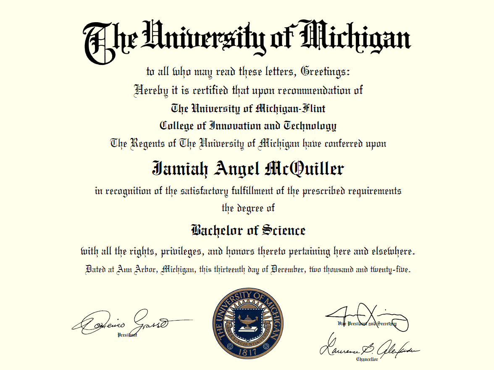

Master of Science in Cybersecurity
University of Michigan–Flint
Jan 2026 – Dec 2026 · Concentration: Network & System Security
In progress — expected December 2026
Cybersecurity Analyst | Vulnerability Management · Endpoint Security · Security Operations
My professional experience has allowed me to work across several areas of information technology, including enterprise endpoint management, identity and access management, technical support, cloud technologies, and security operations.
In my current role as an IT End User Computing Technician with Genesee County (Mar 2026 – Present), I contribute to vulnerability remediation, patch management, security documentation, risk assessment activities, and security control validation. I also work with security exception reviews and support compliance and audit-readiness efforts. These responsibilities have strengthened my ability to evaluate technical issues, document security considerations, coordinate remediation activities, and develop processes that support consistent security practices.
Previously, I worked in IT at Nexteer Automotive (Aug 2023 – Aug 2024), where I gained experience with identity and access management, enterprise endpoint deployment, incident triage, ServiceNow, and Microsoft 365 technologies. At Best Buy (Oct 2024 – Dec 2024), I worked as a Consultant Agent, diagnosing and resolving hardware, software, operating system, and connectivity issues across laptops, desktops, and mobile devices in a customer-facing technical environment.
I also participated in the Google Cloud Career Jumpstart Program (Aug 2022 – Dec 2022), where I gained hands-on exposure to cloud resources, access controls, cloud application deployment, and infrastructure security concepts.
University of Michigan–Flint
Jan 2026 – Dec 2026 · Concentration: Network & System Security
In progress — expected December 2026

University of Michigan–Flint
Jan 2023 – Dec 2025 · Minor in Computer Science
University Honors Recipient

Professional certification demonstrating
foundational cybersecurity knowledge and skills.
Earned September 18, 2026 · Expires September 18, 2029
Tools are grouped by hands-on experience, so tools used daily in professional work are not presented the same as tools used in labs or coursework.
Vulnerability assessment, CVE analysis, remediation, patch management, risk prioritization, and remediation validation.
Endpoint security, EDR, security control validation, incident triage, email security, and phishing analysis.
Security risk assessments, USB exception reviews, SOP development, policy and standards development, security controls, and audit readiness.
ManageEngine Endpoint Central, Cymulate, Barracuda Email Security, CrowdStrike Falcon, Okta, Zscaler, Strike Graph, ServiceNow ITSM, Microsoft 365, PowerShell, and Microsoft Power Platform.
Wireshark, Nmap, Zenmap, Masscan, OpenVAS, Snort, iptables, pfSense, Python, Flask, Google Cloud Platform, and TryHackMe labs.
Nessus (lab exposure only), TOTP / MFA, QR codes, and Figma for application and design work.
Experience assessing software vulnerabilities, analyzing CVEs, prioritizing remediation, coordinating patch deployments, and validating remediation across managed endpoints.
Prepare risk assessment documentation and review security exception requests by evaluating business needs, data sensitivity, data flows, access, and proposed safeguards.
Develop and update standard operating procedures, security policies, and standards to support consistent security practices and repeatable operational processes.
Support audit readiness through security control validation, remediation tracking, technical documentation, and compliance activities related to security requirements.